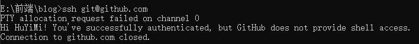

Hexo博客实现流程
hexo官网 https://hexo.io/zh-cn/
一.hexo搭建步骤
1.安装Node.js https://LiYeZhiXiu.github.io/post/node/1/
2.安装Git http://LiYeZhiXiu.github.io/post/git/1/
3.在GitHub创建个人仓库及生成ssh添加到GitHub
4.将hexo部署到GitHub
二.hexo博客实现
1.安装hexo-cli，按Enter键回车
1 | npm i -g hexo-cli |
2.创建博客blog，按Enter键回车
1 | hexo init blog |
3.安装依赖 cd blog，按Enter键回车
1 | npm i |
4.生成静态界面，按Enter键回车
1 | hexo g |
5.启动服务，按Enter键回车
1 | hexo s |
6.实现界面
三.创建一个仓库及生成ssh添加到GitHub
1.注册一个GitHub账户 https://github.com/
2.创建一个跟你同名仓库，后面加上.github.io.
3.生成ssh添加到GitHub，按Enter键回车
1 | git config --global user.name "github用户名" |
4.检测是否添加成功，按Enter键回车
1 | git config -l |
5.创建ssh，按Enter键回车
1 | ssh-keygen -t rsa -C "github邮箱" |
6.id_rsa.pub内容复制到GitHub上
7.检测是否添加成功
1 | ssh git@github.com |

四.hexo部署到GitHub
1.双击打开hexo项目，进入项目配置文件_config.yml,在最下面，修改deploy
1 | deploy: |

2.安装hexo-deployer-git,然后执行hexo命令
1 | npm i hexo-deployer-git --save |
3.执行hexo d后结果
4.执行以下命令,再重新执行hexo d
1 | git config --global http.sslVerify "false" |
5.重新执行hexo d,如果报之前错，就重复以上命令
6.到GitHub上看是否上传成功
7.在地址栏中输入yourname.github.io,结果如下
本博客所有文章除特别声明外，均采用 CC BY-NC-SA 4.0 许可协议。转载请注明来自 一叶知秋！
相关推荐


评论